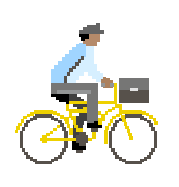

Note pour l'itinéraire :
Distance du trajet :
Temps de trajet estimé :
Note pour l'itinéraire :
Distance du trajet :
Temps de trajet estimé :

OSCO est une application participative qui propose de vous déplacer en toute sécurité, au sein de la Métropole de Lyon. Vous pouvez désormais connaitre le degré de dangerosité de votre itinéraire. Vous préférez rouler sur des voies réservées aux cyclistes ? Indiquez le grâce à l'option de personnalisation d'itinéraire !!!
Par ailleurs, cette application se veut collaborative. Avec OpenStreetMap participez à l'enrichissement de l'application. « Vous pouvez vous aussi contribuer : nous vous faisons confiance pour améliorer la carte » (OpenStreetMap).
Partez serein avec OSCO et son indice de dangerostié basé sur le type de revêtement, la présence d'aménagements cyclables (pistes et bandes cyclables, voies vertes...), et la vitesse maximale autorisée sur la chaussée.
©La Poste
Le code d'OSCO est libre et gratuit. Vous pouvez retrouver l'intégralité du code produit et des procédures d'installation sur le Github du projet. N'hésitez pas à nous contacter pour plus d'informations.
La qualité du revêtement correspond aux matériaux qui recouvrent la surface de la voirie. Ceux-ci peuvent être:
En augmentant la valeur du revêtement, vous considérez qu'il s'agit d'un élément important à prendre en compte pour le calcul de votre itinéraire.

©GrandLyon